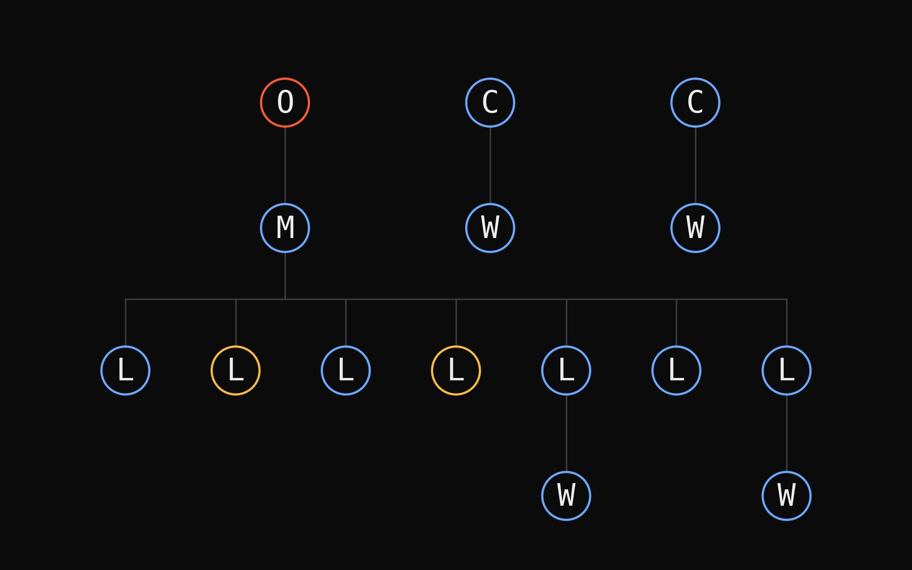
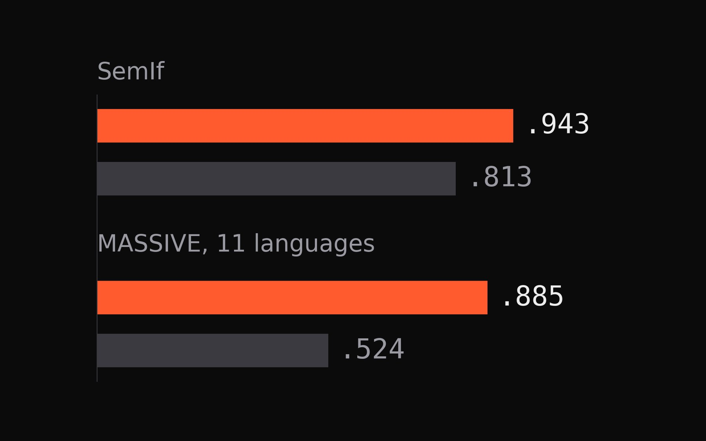
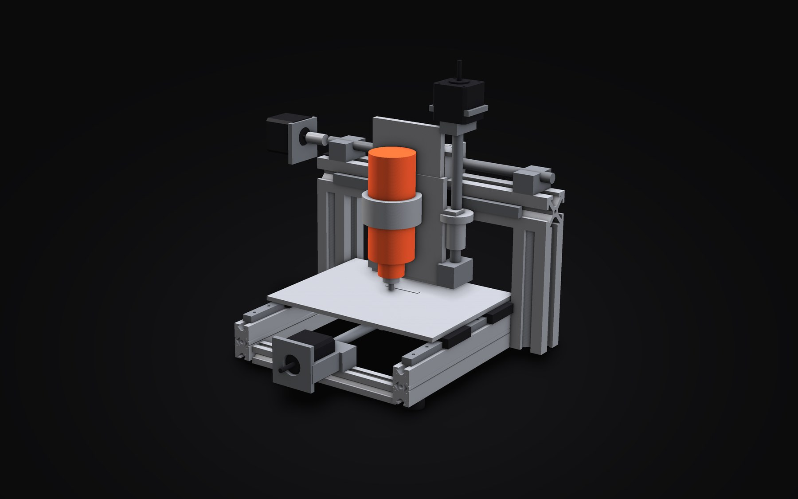
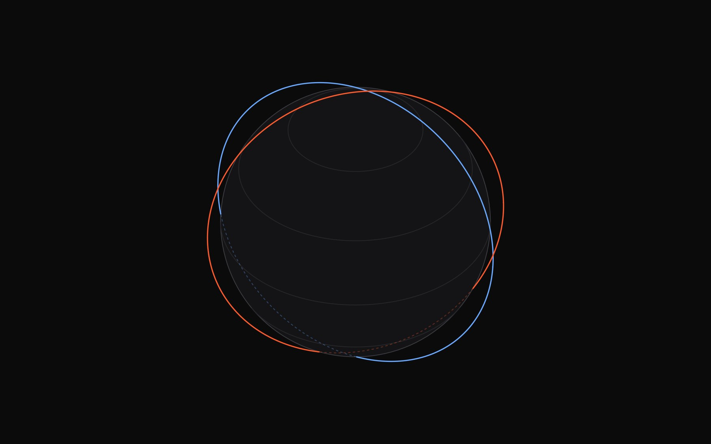
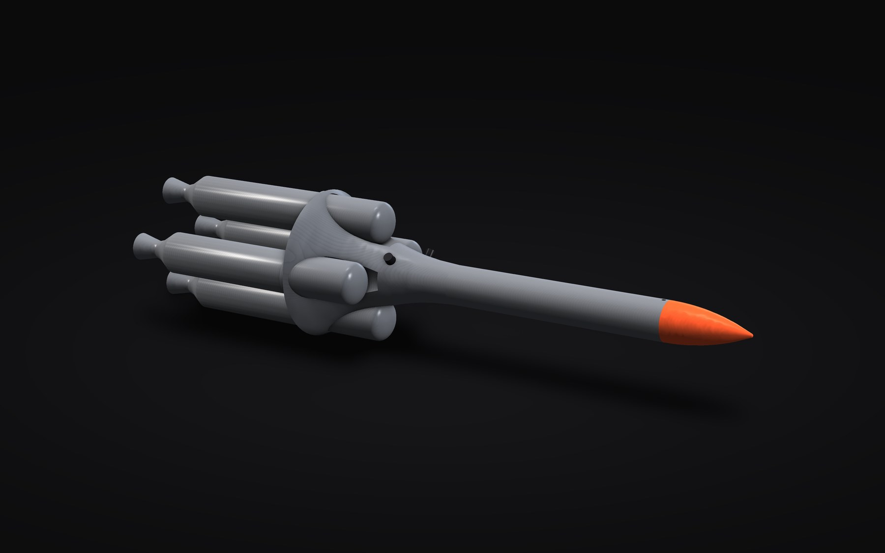
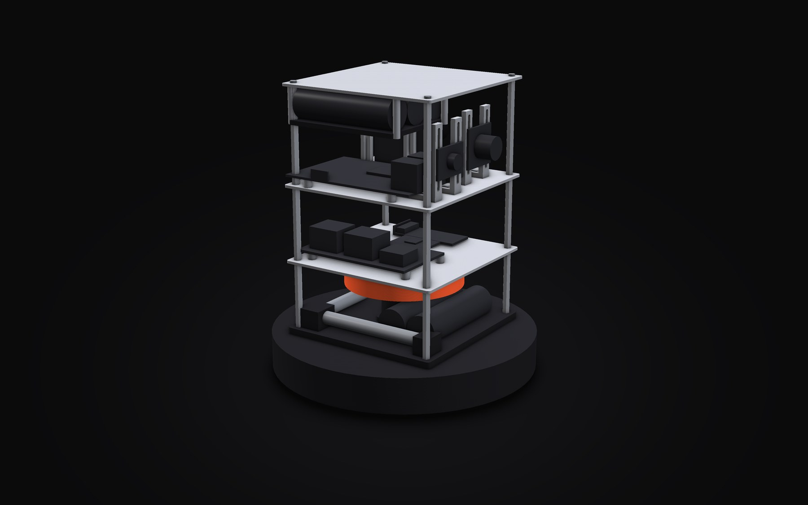
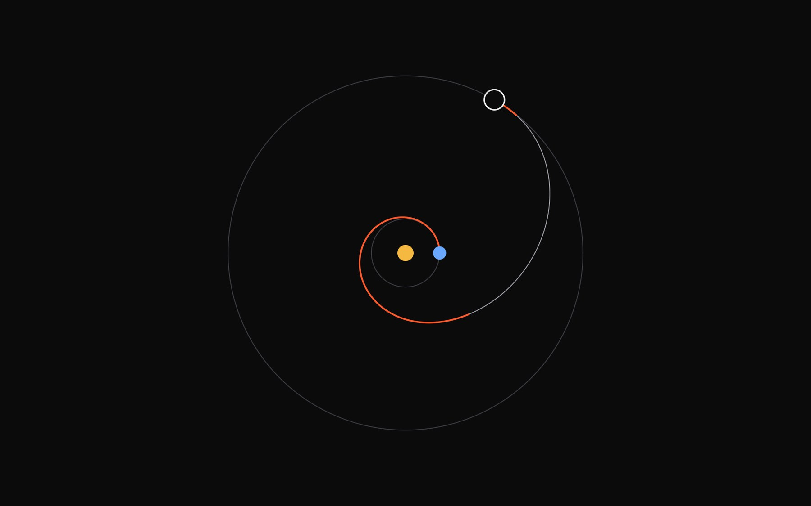

Software · Hardware · Space
Miguel
Villax
I build things that cross the line between code and metal: local AI systems, agent platforms, small machines and spacecraft concepts.
- 13projects, each with its numbers and its limits
- 0.943balanced accuracy on SemIf, Tez
- 99hardware tools in Theioma's build pipeline
- 29debris objects reached by the median tour in 7 years, against 9 with plane-change burns
Selected work
All 13 projects →
Theioma
A self-hosted command centre where one person directs teams of coding agents, from a written brief to a build manual.
One person directs teams of Claude Code and Codex agents by text or voice. An orchestrator plans with the user, project managers staff workers in their own terminals, review and security agents check every finished task, and anything irreversible waits for a passkey-gated approval.

Tez
Typed decisions with calibrated confidence from one forward pass of a local model.

GoPro gimbal
A three-axis stabiliser with closed-loop control, built to smooth footage from snowboarding and skating.

Rucksack CNC mill
A small Cartesian milling machine with a 2.5-inch working cube, light enough to carry.

Debris removal by nodal precession
Multi-target active debris removal that lets orbital physics do the plane changes.

PERCI: a penetrator for Umbriel
A smallsat penetrator that rides on NASA's Uranus Orbiter and Probe and hits a moon.

A CubeSat that can stop its own spin
A one-axis attitude determination and control system in a CubeSat-style bus, tested on a spinning testbed the class built.

What nuclear power does for electric propulsion
An audit and rebuild of a course paper on nuclear electric propulsion: what a fission reactor really enables, mission by mission and decade by decade.
Three disciplines, one workshop
Software
Local AI, agent platforms and desktop tools that run on your own machine.
Hardware
Gimbals, mills and plotters: designed, printed, wired and tested.
Space
Mission design, orbital mechanics and spacecraft concepts.
What comes next
This site is the home for what I build. Theioma, the agent platform at the top of the selected work, designs and documents things end to end, from a written brief to code, circuits, parts and a build manual. What it produces, software and hardware, is published here, in the Lab.
Until the first Lab entry lands, the work above is what exists: finished machines, open-source tools and research, each described with its numbers and its limits, not only the highlights.